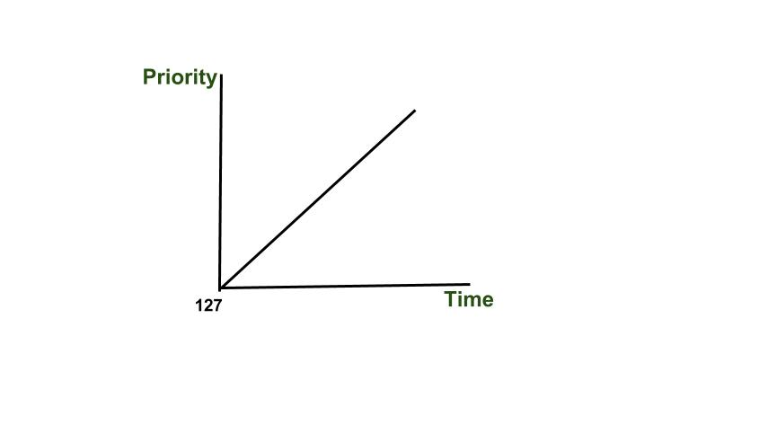

Prerequisites : Priority Scheduling
We have already discussed about the priority scheduling in this post. It is one of the most common scheduling algorithms in batch systems. Each process is assigned a priority. Process with the highest priority is to be executed first and so on.
In this post we will discuss a major problem related to priority scheduling and it’s solution.
Starvation or indefinite blocking is phenomenon associated with the Priority scheduling algorithms, in which a process ready to run for CPU can wait indefinitely because of low priority. In heavily loaded computer system, a steady stream of higher-priority processes can prevent a low-priority process from ever getting the CPU.
There has been rumors that in 1967 Priority Scheduling was used in IBM 7094 at MIT , and they found a low-priority process that had not been submitted till 1973.
{kind=link}
As we see in the above example process having higher priority than other processes getting CPU earlier. We can think of a scenario in which only one process is having very low-priority (for example 127) and we are giving other process with high-priority, this can lead indefinitely waiting for the process for CPU which is having low-priority, this leads to Starvation. Further we have also discuss about the solution of starvation.
Differences between Deadlock and Starvation in OS :
- Deadlock occurs when none of the processes in the set is able to move ahead due to occupancy of the required resources by some other process as shown in the figure below, on the other hand Starvation occurs when a process waits for an indefinite period of time to get the resource it requires.
- Other name of deadlock is Circular Waiting. Other name of starvation is Lived lock.
- When deadlock occurs no process can make progress, while in starvation apart from the victim process other processes can progress or proceed.
Solution to Starvation : Aging
Aging is a technique of gradually increasing the priority of processes that wait in the system for a long time.For example, if priority range from 127(low) to 0(high), we could increase the priority of a waiting process by 1 Every 15 minutes. Eventually even a process with an initial priority of 127 would take no more than 32 hours for priority 127 process to age to a priority-0 process.
